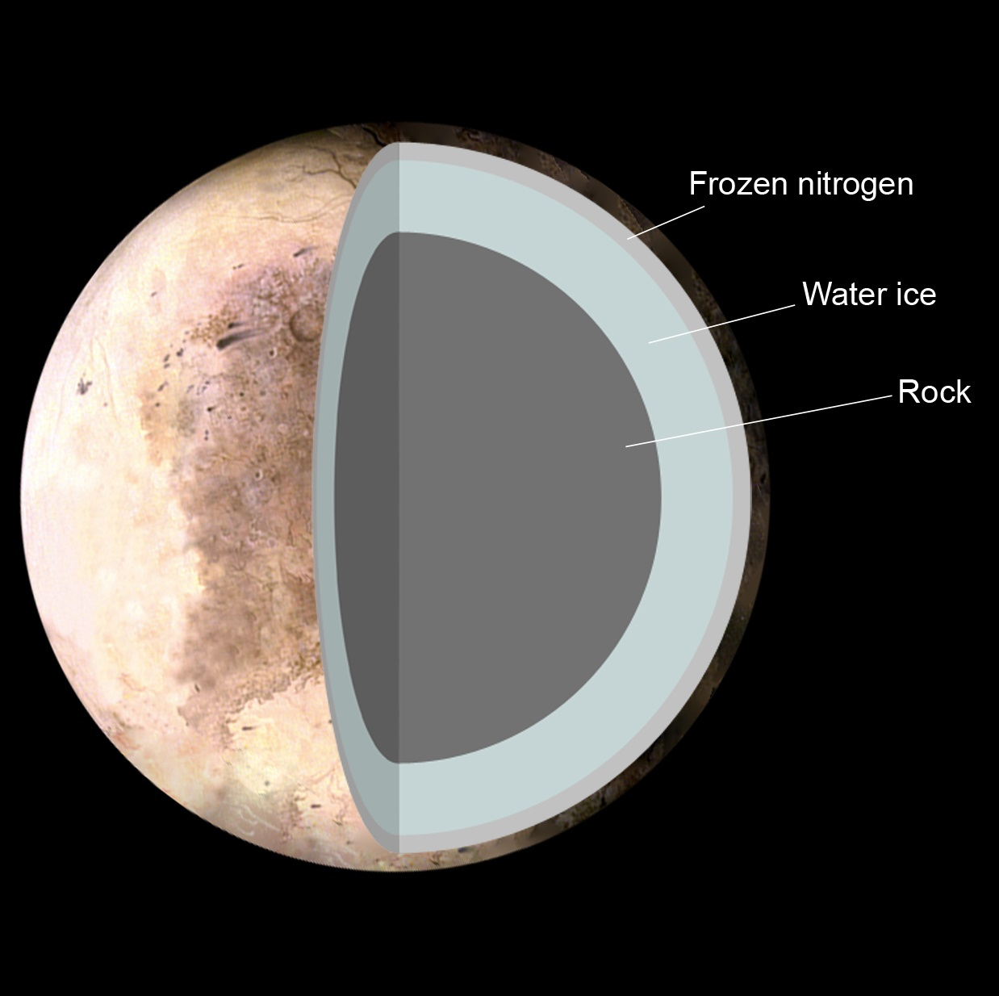

Плутон — втора по големина џуџеста планета во Сончевиот систем, официјално означена како „134340 Плутон“. Откриена е во 1930 година од американскиот астроном Клајд Томбо. На конгресот на Меѓународнaтa астрономскa унија одржан на 24 август 2006 г. за прв пат е дефиниран поимот планета. Според оваа дефиниција Плутон не претставува планета и од тогаш официјално се вбројува во групата на планети-џуџиња. Со оваа одлука е одредено дека Сончевиот систем има само 8 планети. По големината Плутон е помал од седум природни сателити кои орбитираат околу други планети во Сончевиот систем: (Месечината, Јо, Европа, Ганимед, Калисто, Титан и Тритон). Пречникот на Плутон е 2.274 км. Тој орбитира на просечна оддалеченост од 5.913.520.000 км (39,5 АЕ) од Сонцето. Времето потребно еднаш да го заобиколи Сонцето (или должината на неговата планетарна годината) изнесува 248,54 земјни години. Тој околу својата оска се завртува за 6,39 земјини денови. Полупречникот на Плутон исто така не е познат со сигурност. Вредноста од 1.137 км е со грешка од +/-8 км, односно 1%.
Плутон има три природни сателити: Харон (откриен во 1978) - со кој често се сметаат заедно како двоен планетарен систем, бидејќи кружат еден околу друг, и уште три помали сателити – Никта и Хидра (откриени во 2005) и S/2012 P 1 (откриен во 2012).

Атмосферата на Плутон, се состои најмногу од азот со и мала количина на јаглерод диоксид и метан. Таа е екстремно ретка бидејќи притисокот на површината е само неколку микробари, кои не се доволни да ја задржат атмосферата. Атмосферата на Плутон постои како гас само кога Плутон е близу својот перихел, а поголемиот дел од плутоновата година атмосферските гасови се замрзнати на неговата површина. За време на перихелот дел од гасовите го напуштаат, а можеби и влегуваат во интеракција со Харон.
Температурата на површината на Плутон варира помеѓу -235 и -210 °C (38 до 63 Келвини). Гледано низ телескоп потоплите региони се оние кои визуелно се забележуваат како потемни.
Едно заобиколување на Сонцето трае 248 години. Карактеристиките на орбитата се многу поразлични од другите планети во Сончевиот Систем. Останатите планети следат скоро кружни патеки околу Сонцето и се сите практично во една референтна рамнина. Во споредба, орбитата на Плутон е елиптична навалена за 17 степени во однос на оваа рамнина. Бидејќи орбитата е елиптична постојат предели во кои Плутон е поблиску до Сонцето одколку Нептун.
Најголемиот природен сателит на Плутон, Харон, е откриен во 1978 година. Иако заедничката маса на Плутон и Харон е точно одредена (со помош на точни мерења на периодот и рaдиусот на орбитата на Харон) поединечните маси на Плутон и Харон тешко е да се пресметаат бидејќи тоа бара да се одредат взаемните движења околу заедничкото тежиште коешто е многу тешко да се измери заради малите димензии и оддалеченоста од Земјата. Односот на нивните маси е некаде помеѓу 0,084 и 0,157. Харон орбитира на 19.640 км од Плутон, а пречникот му е 1172 км. Неречен е според ликот од старогрчката митологија кој ги пренесувал мртвите преку реката Стикс во подземниот свет. Пред да биде откриен се сметало дека Плутон е многу поголем, бидејќи матните слики од Плутон и Харон заедно изгледале како еден голем објект. Полупречникот на Харон не се знае со голема точност. Вредноста од 586 км има грешка од +/- 13 км, повеќе од 2%. Неговата маса и густина исто така не се точно познати. Плутон и Харон се уникатни и по тоа што не само што Харон ротира синхроно, туку и Плутон. Затоа тие цело време се свртени со иста страна еден кон друг. Харон е најголемиот сателит во однос на матичната планета во Сончевиот систем, поради тоа и се јавува меѓусебната ротација на двете тела.
Дознај повеќе за Плутон
| Апхел |
49.305 AЕ (7,375.93 Gm) |
| Перихел |
29.658 AЕ(4,436.82 Gm) |
| Голема полуоска |
39.48 AЕ (5,906.38 Gm) |
| Орбитален период |
6.39 д |
| Ѕвезден период |
248.00 г 90 д |
| Просечна орбитална брзина |
4.67 km/s |
| Познати сателити |
5 |